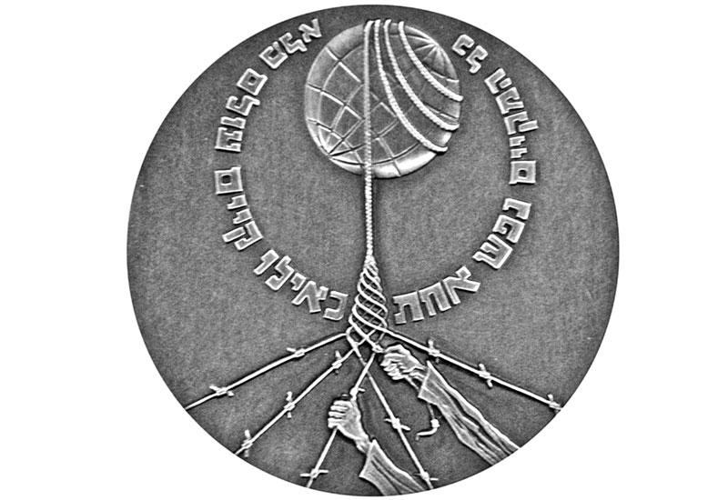

השואה באנטוורפן (1940–1945)
בין השנים 1940 ל-1945, הקהילה היהודית של אנטוורפן נרדפה באופן שיטתי, גורשה, ונהרס ברובו. אלפי גברים, נשים וילדים יהודים מהעיר הזאת נשלחו אל מותם. חלק זה מתעד את ההיסטוריה שלהם, את שמותיהם ואת הפירוק של אחד מהם הקהילות היהודיות הגדולות באירופה לפני המלחמה.
אנטוורפן בשנת 1940
ציר זמן
עליית הנאציזם
היטלר עולה לשלטון בגרמניה.
הכיבוש הגרמני
גרמניה פולשת לבלגיה. הממשל הצבאי מתחיל.
דוגמאות אנטי-יהודיות ראשונות
רישום יהודים ועסקים יהודיים הופך לחובה.
פוגרום באנטוורפן
פרעות אלימות אנטי-יהודיות במחוז היהלומים, בתמיכת משתפי פעולה מקומיים.
הכוכב הצהוב
יהודים נאלצים לענוד את מגן הדוד הצהוב בפומבי.
סיבובים גדולים (ראזיאס)
מעצרים המוניים באנטוורפן. אלפים נשלחים לדוסין קאזרן.
שִׁחרוּר
כוחות בעלות הברית משחררים את אנטוורפן. הקהילה הרוסה.

מאגר שמות
ארכיון הולך וגדל של קורבנות וניצולים הקשורים לאנטוורפן.
חיפוש מסד נתונים →
אנדרטאות ומונומנטים
אתרי זיכרון באנטוורפן ומחוצה לה.
צפה באנדרטאות →
חסידי אומות העולם
לא יהודים שסיכנו את חייהם כדי להגן על משפחות יהודיות בזמן הכיבוש.
קרא סיפורים →